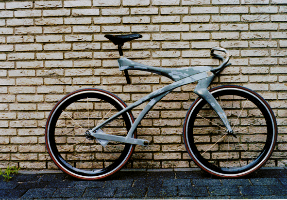

The Project
CONNECTED RACING
This university project explored the future of connected cycling, integrating an interactive computer into the bicycle design that would help riders train more effectively and communicate with their team during races.
The project combined industrial design, interaction design, and emerging connected technology concepts—presaging the smart fitness devices that would become common decades later.
Design

BICYCLE & INTERFACE
Final bicycle design with integrated computing interface

Design visualization
Detail view showing integrated components
Outcomes
RECOGNITION
- Featured at Europe's largest bicycle trade show
- Integrated industrial design with interaction design
- Pioneered connected fitness device concepts
- Combined training analytics with team communication